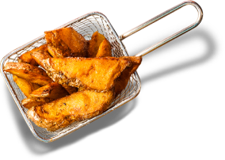
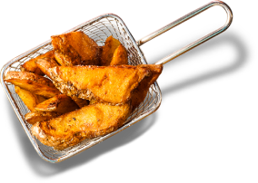

"Begin Your Culinary Venture: Let's Start with Sindbad Consulting!"
Enroll Now 


How to begin
1.0 Introduction:
The future of food-service industry looks bright, however like all other businesses, there are no guarantees. The most successful restaurant will also tell you that running a restaurant comes with its own pros & cons and it takes a lot of planning, persistence & knowledge. It ain’t a cake-walk. You are not getting rich over-night but you sure can go on the right path to be one.
Most of the restaurants fail (about 70%) in the first year of its operation and “lack of planning & knowledge” is the top reason. It is a great business, a lovely one with the glamour and love around it but there are a thousand strings that need to be in place, pulled & pushed just in the right way. Though there is no 100% fool-proof way to success, here are a few points that sure won’t let you fail if followed to the T.
2.0 Restaurant Types:
Before we move further, here are the types of food-service
business:
- Multi-cuisine Restaurant
- Cafe
- Restro-Cafe
- Dhaba
- Food Truck
- Cloud Kitchen
- Specialty restaurant / joint
- Coffee Shop
- Bakery
- Fast Food
Remember that no business can capture the entire market. You simply cannot. So your focus should be based on the market based on the concept and capture that start to end. Forget the rest.
> Selecting a Food Concept : You can delight your customers with experience but they need not be surprised all the time; meaning you need not think differently compulsorily when it comes to concept. We have seen restaurants with unique features failing simply because it was so unique. Yes, you read that right. For example, a simple family fine-dine restaurant may work better than a hi-end expensive lounge at a location which has dense family population. So either decide a concept based on location, or decide a location based on concept.
> Working in a Restaurant : Meeting & hosting a guest with grace is not the only part of a restaurateur's life. A lot of time should be dedicated to creating the right menu & recipe, grocery inventory management, managing staff; strategizing & executing marketing ideas; accounting & daily cash flow, running the show in line with local govt authorities etc. Whichever food-service business you start, the best way to learn the trick is to work for similar set-up for sometime or hiring the right consultant with a proven-track record.
> Location : As you
explore the ideal location for your restaurant, ask yourself
these questions:
Why is this location perfect for my restaurant?
What is the eating-out population in this area?
Do people of this area believe in spending in restaurants?
Will people from other nearby areas travel to this area?
That question being answered, remember that a ground floor (or
rooftops, may be) locations are anyday better than any other
floor. Parking woes are not to be ignored at all. You may have
to compromise a little somewhere but it’s better to wait for the
right location than to fall prey to a compromised one. If you
are renting it out, cross-check the rent in your business plan
and see the feasibility of revenues. I personally prefer to
visit the location at multiple times (day time, night hours,
peak hours, weekdays, weekends) to get a hang of the kind of
people visiting the area.
3.0 Restaurant Business Plan:
Your business plan should consist of all business components
like CAPEX and OPEX. The CAPEX (capital expense / investment)
should have detailed working of how / when / where / why are you
spending. Question yourself why or how an investment on a
particular thing will help you run your business profitably.
Likewise for OPEX (operating expense), jot down each component
like rent, salary, grocery, utilities, etc and run the excel
calculation for 24 months atleast. Remember this is the most
critical part of your business even if it sounds boring to do
so. Your restaurant, like any other business, will incur loss
for the first few months. Make provision for these losses in
your business plan (I prefer to put this in CAPEX). Keep some
fund aside for the unforeseen circumstances (Pandemic, New Govt
rules, some construction work etc for example). Also, you may
like to add a plan B or an exit plan in your business plan.
The following will help you create your business plan for your
restaurant in a better way.
- Per week sales anticipation
- How to achieve those sales figure.
- What is your operating break even month on month and how will
you achieve those numbers
- Competition revenue & operations mapping
- Future of your business – think long term, think expansion,
think growing / type of population
- Don’t over-estimate your ‘prime location’
- Don’t under-estimate the power of great prelaunch marketing.
-
Layout / seating capacity :
think whether your restaurant will be profitable given, say 60%
occupancy on weekdays & 80% occupancy on weekends Spend properly
in the heart of restaurant & the team that runs it i.e. Kitchen
& Staff
4.0 Menu :
The golden rule is to cook what your guests want & not what you want them to eat. Too much variety in menu may increase your food cost, may load your staff, deteriorate quality, finally leading to loss overall. In other words, as you put together a plan for your food-service business, be aware of some of the trends in terms of menu content and design. These factors could--and, in fact, should--influence the type of food-service business you open. Cross check your rates of dishes with successful restaurants in your area. Decreasing or increasing the rate by 5-7% will not impact positively or negatively but try to keep the food cost at an ideal rate of 30% of what you charge. This should be averaged out overall, for easier calculation.
5.0 Staffing & Training:
One of the biggest challenges businesses in all industries face is a lack of qualified labor. As the food-service industry in general continues to grow and thrive, the demand for workers in an already-diminished labor pool is also increasing. Finding qualified workers, rising labor costs & high attrition rate are key concerns for food-service business owners. Empanelling a staff provider (HR Consultant) will help you a lot in hiring the right staff as per your menu. There are several categories of personnel in the restaurant business: manager, cooks, servers, busboys, dishwashers, hosts and bartenders. When your restaurant is still new, some employees' duties may cross over from one category to another. For example, your manager may double as the host, and servers may also bus tables. Be sure to hire people who are willing to be flexible in their duties. Your payroll costs should be about 24 to 35 percent of your total gross sales.
6.0 Marketing
Every business needs a marketing plan, and your food-service business is no exception. Remember that word-of-mouth is still the best method of advertising but don’t forget that you need to cater to a large number of guests before you rely solely on it. No studies are required to know that Social Media, platforms like CityShor, Zomato, local food bloggers, etc are the best ones for any food-service business. Make sure to come up with a strong prelaunch, launch & post-launch marketing strategy. Marketing is the only way customers will know you exist. Don’t rely on your ‘prime location and beautiful signage board’ - most of the restaurateurs tend to go wrong here. Keep a tab on the source of information through which customers have come. This will help you strengthen your marketing.
Next, step back and take a look at each element in your facility. Everything from the parking lot to the interior decor to the printed items contributes to your marketing message--and each should be an accurate reflection of what that message is.
At the end of day, rely more on the data & less on gut-feel but do not ignore your gut feel totally.
If you have read all above and still wondering whether or not to get in the business OR which kind of food service business you should do based on current trend ... we are just a call away and we don’t charge for suggestions or a little help :)
HOW TO BEGIN
1.0 Introduction:
2.0 Restaurant Types:
- Multi-cuisine Restaurant
- Cafe
- Restro-Cafe
- Dhaba
- Food Truck
- Cloud Kitchen
- Specialty restaurant / joint
- Coffee Shop
- Bakery
- Fast Food
> Selecting a Food Concept : You can delight your customers with experience but they need not be surprised all the time; meaning you need not think differently compulsorily when it comes to concept. We have seen restaurants with unique features failing simply because it was so unique. Yes, you read that right. For example, a simple family fine-dine restaurant may work better than a hi-end expensive lounge at a location which has dense family population. So either decide a concept based on location, or decide a location based on concept.
> Working in a Restaurant : Meeting & hosting a guest with grace is not the only part of a restaurateur's life. A lot of time should be dedicated to creating the right menu & recipe, grocery inventory management, managing staff; strategizing & executing marketing ideas; accounting & daily cash flow, running the show in line with local govt authorities etc. Whichever food-service business you start, the best way to learn the trick is to work for similar set-up for sometime or hiring the right consultant with a proven-track record.
> Location :As you explore the ideal location for your restaurant, ask yourself these questions:
Why is this location perfect for my restaurant?
What is the eating-out population in this area?
Do people of this area believe in spending in restaurants?
Will people from other nearby areas travel to this area?
That question being answered, remember that a ground floor (or rooftops, may be) locations are anyday better than any other floor.
Parking woes are not to be ignored at all. You may have to compromise a little somewhere but it’s better to wait for the right location than to fall prey to a compromised one. If you are renting it out, cross-check the rent in your business plan and see the feasibility of revenues. I personally prefer to visit the location at multiple times (day time, night hours, peak hours, weekdays, weekends) to get a hang of the kind of people visiting the area.
3.0 Restaurant Business Plan:
- Per week sales anticipation
- How to achieve those sales figure.
- What is your operating break even month on month and how will you achieve those numbers
- Competition revenue & operations mapping
- Future of your business – think long term, think expansion, think growing / type of population
- Don’t over-estimate your ‘prime location’
- Don’t under-estimate the power of great prelaunch marketing.
- Layout / seating capacity : think whether your restaurant will be profitable given, say 60% occupancy on weekdays & 80% occupancy on weekends Spend properly in the heart of restaurant & the team that runs it i.e. Kitchen & Staff